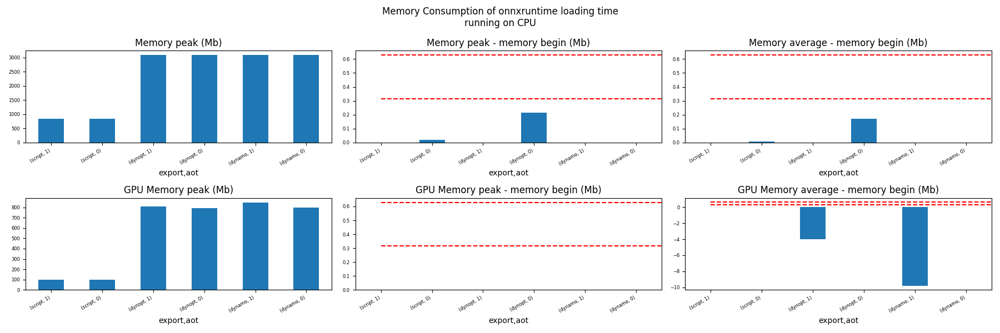
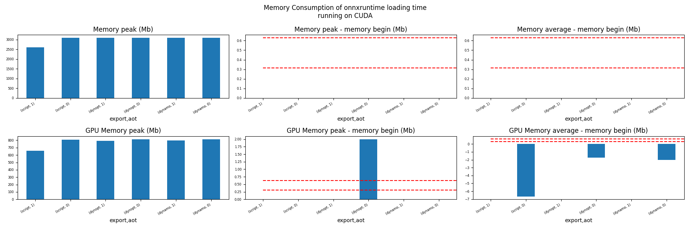
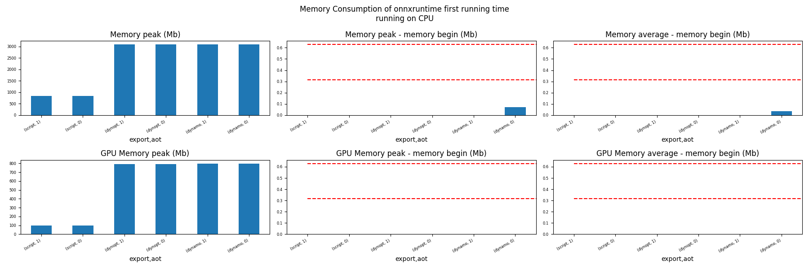
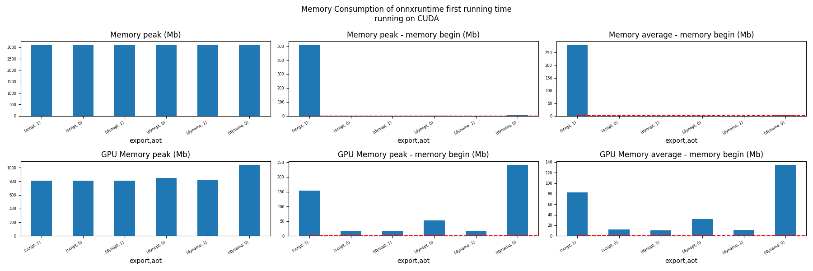
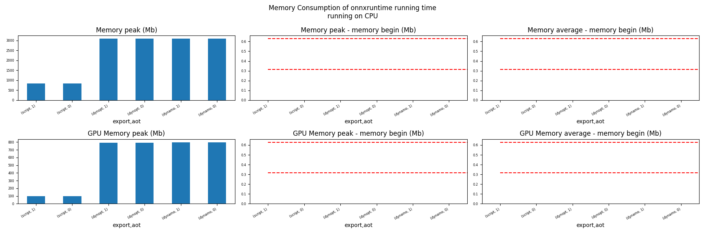
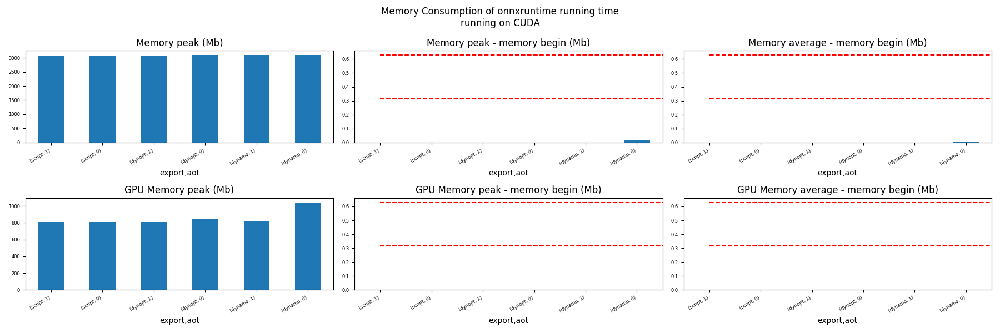

Note
Go to the end to download the full example code
Evaluate different ways to export a torch model to ONNX#
The example evaluates the performance of onnxruntime of a simple torch model after it was converted into ONNX through different processes:
TorchScript-based ONNX Exporter, let’s call it script
TorchDynamo-based ONNX Exporter, let’s call it dynamo
if available, the previous model but optimized, dynopt
a custom exporter cus_p0, this exporter supports a very limited set of models, as dynamo, it relies on torch.fx but the design is closer to what tensorflow-onnx does.
the same exporter but unused nodes were removed and constants were folded, cus_p2
To run the script:
python docs/examples/plot_torch_export --help
The script takes around 12 minutes with a larger models.
Some helpers#
import contextlib
import itertools
import os
import platform
import pprint
import multiprocessing
import time
import cProfile
import pstats
import io
import warnings
import logging
from pstats import SortKey
try:
with warnings.catch_warnings():
warnings.simplefilter("ignore")
import onnxruntime
has_cuda = "CUDAExecutionProvider" in onnxruntime.get_available_providers()
except ImportError:
print("onnxruntime not available.")
import sys
sys.exit(0)
import numpy as np
import matplotlib.pyplot as plt
import pandas
import onnx
from onnxrt_backend_dev.monitoring.profiling import profile2graph
import torch
from torch import nn
import torch.nn.functional as F
import onnxrt_backend_dev
# from onnxrt_backend_dev.torch_exp.onnx_export import to_onnx
from onnxrt_backend_dev.plotting.memory import memory_peak_plot
from onnxrt_backend_dev.ext_test_case import get_figure
from onnxrt_backend_dev.args import get_parsed_args
from onnxrt_backend_dev.monitoring.benchmark import measure_time
from onnxrt_backend_dev.monitoring.memory_peak import start_spying_on
from tqdm import tqdm
has_cuda = has_cuda and torch.cuda.is_available()
logging.disable(logging.ERROR)
def system_info():
obs = {}
obs["processor"] = platform.processor()
obs["cores"] = multiprocessing.cpu_count()
try:
obs["cuda"] = 1 if torch.cuda.is_available() else 0
obs["cuda_count"] = torch.cuda.device_count()
obs["cuda_name"] = torch.cuda.get_device_name()
obs["cuda_capa"] = torch.cuda.get_device_capability()
except (RuntimeError, AssertionError):
# no cuda
pass
return obs
pprint.pprint(system_info())
[2024-01-12 12:11:18,472] [INFO] [real_accelerator.py:158:get_accelerator] Setting ds_accelerator to cuda (auto detect)
{'cores': 8,
'cuda': 1,
'cuda_capa': (6, 1),
'cuda_count': 1,
'cuda_name': 'NVIDIA GeForce GTX 1060',
'processor': 'x86_64'}
Scripts arguments
script_args = get_parsed_args(
"plot_torch_export",
description=__doc__,
scenarios={
"small": "small model to test",
"middle": "55Mb model",
"large": "1Gb model",
},
warmup=5,
repeat=5,
maxtime=(
2,
"maximum time to run a model to measure the computation time, "
"it is 0.1 when scenario is small",
),
expose="scenarios,repeat,warmup",
)
if script_args.scenario in (None, "small"):
script_args.maxtime = 0.1
print(f"scenario={script_args.scenario or 'small'}")
print(f"warmup={script_args.warmup}")
print(f"repeat={script_args.repeat}")
print(f"maxtime={script_args.maxtime}")
scenario=small
warmup=5
repeat=5
maxtime=0.1
The model#
A simple model to convert.
class MyModelClass(nn.Module):
def __init__(self, scenario=script_args.scenario):
super(MyModelClass, self).__init__()
if scenario == "middle":
self.large = False
self.conv1 = nn.Conv2d(1, 128, 5)
self.conv2 = nn.Conv2d(128, 16, 5)
self.fc1 = nn.Linear(13456, 1024)
self.fcs = []
self.fc2 = nn.Linear(1024, 128)
self.fc3 = nn.Linear(128, 10)
elif scenario in (None, "small"):
self.large = False
self.conv1 = nn.Conv2d(1, 16, 5)
self.conv2 = nn.Conv2d(16, 16, 5)
self.fc1 = nn.Linear(16, 512)
self.fcs = []
self.fc2 = nn.Linear(512, 128)
self.fc3 = nn.Linear(128, 10)
elif scenario in (None, "large"):
self.large = True
self.conv1 = nn.Conv2d(1, 128, 5)
self.conv2 = nn.Conv2d(128, 16, 5)
self.fc1 = nn.Linear(13456, 4096)
# torch script does not support loops.
self.fca = nn.Linear(4096, 4096)
self.fcb = nn.Linear(4096, 4096)
self.fcc = nn.Linear(4096, 4096)
self.fcd = nn.Linear(4096, 4096)
self.fce = nn.Linear(4096, 4096)
self.fcf = nn.Linear(4096, 4096)
self.fcg = nn.Linear(4096, 4096)
self.fch = nn.Linear(4096, 4096)
self.fci = nn.Linear(4096, 4096)
self.fck = nn.Linear(4096, 4096)
self.fcl = nn.Linear(4096, 4096)
self.fcm = nn.Linear(4096, 4096)
self.fcn = nn.Linear(4096, 4096)
# end of the unfolded loop.
self.fc2 = nn.Linear(4096, 128)
self.fc3 = nn.Linear(128, 10)
else:
raise ValueError(f"Unsupported scenario={scenario!r}.")
def forward(self, x):
x = F.max_pool2d(F.relu(self.conv1(x)), (2, 2))
x = F.max_pool2d(F.relu(self.conv2(x)), 2)
x = torch.flatten(x, 1)
x = F.relu(self.fc1(x))
if self.large:
# loop
x = F.relu(self.fca(x))
x = F.relu(self.fcb(x))
x = F.relu(self.fcc(x))
x = F.relu(self.fcd(x))
x = F.relu(self.fce(x))
x = F.relu(self.fcf(x))
x = F.relu(self.fcg(x))
x = F.relu(self.fch(x))
x = F.relu(self.fci(x))
x = F.relu(self.fck(x))
x = F.relu(self.fcl(x))
x = F.relu(self.fcm(x))
x = F.relu(self.fcn(x))
# end of the loop
x = F.relu(self.fc2(x))
x = self.fc3(x)
return x
def create_model_and_input(scenario=script_args.scenario):
if scenario == "middle":
shape = [1, 1, 128, 128]
elif scenario in (None, "small"):
shape = [1, 1, 16, 16]
elif scenario == "large":
shape = [1, 1, 128, 128]
else:
raise ValueError(f"Unsupported scenario={scenario!r}.")
input_tensor = torch.rand(*shape).to(torch.float32)
model = MyModelClass(scenario=scenario)
assert model(input_tensor) is not None
return model, input_tensor
def torch_model_size(model):
size_model = 0
for param in model.parameters():
size = param.numel() * torch.finfo(param.data.dtype).bits / 8
size_model += size
return size_model
model, input_tensor = create_model_and_input()
model_size = torch_model_size(model)
print(f"model size={model_size / 2 ** 20} Mb")
model size=0.31467437744140625 Mb
The exporters#
def export_script(filename, model, *args):
with contextlib.redirect_stdout(io.StringIO()):
with warnings.catch_warnings():
warnings.simplefilter("ignore")
torch.onnx.export(model, *args, filename, input_names=["input"])
def export_dynamo(filename, model, *args):
with contextlib.redirect_stdout(io.StringIO()):
with warnings.catch_warnings():
warnings.simplefilter("ignore")
export_output = torch.onnx.dynamo_export(model, *args)
export_output.save(filename)
def export_dynopt(filename, model, *args):
with contextlib.redirect_stdout(io.StringIO()):
with warnings.catch_warnings():
warnings.simplefilter("ignore")
export_output = torch.onnx.dynamo_export(model, *args)
model_onnx = export_output.model_proto
from onnxrewriter.optimizer import optimize
optimized_model = optimize(model_onnx)
with open(filename, "wb") as f:
f.write(optimized_model.SerializeToString())
def export_cus_p0(filename, model, *args):
onx = to_onnx(model, tuple(args), input_names=["input"]) # noqa: F821
with open(filename, "wb") as f:
f.write(onx.SerializeToString())
def export_cus_p2(filename, model, *args):
onx = to_onnx( # noqa: F821
model,
tuple(args),
input_names=["input"],
remove_unused=True,
constant_folding=True,
)
with open(filename, "wb") as f:
f.write(onx.SerializeToString())
Let’s check they are working.
export_functions = [
export_script,
export_dynamo,
export_dynopt,
export_cus_p0,
export_cus_p2,
]
exporters = {f.__name__.replace("export_", ""): f for f in export_functions}
supported_exporters = {}
for k, v in exporters.items():
print(f"run exporter {k}")
filename = f"plot_torch_export_{k}.onnx"
try:
v(filename, model, input_tensor)
except Exception as e:
print(f"skipped due to {str(e)[:1000]}")
continue
supported_exporters[k] = v
print(f"done. size={os.stat(filename).st_size / 2 ** 20:1.0f} Mb")
run exporter script
done. size=0 Mb
run exporter dynamo
done. size=0 Mb
run exporter dynopt
done. size=1 Mb
run exporter cus_p0
skipped due to name 'to_onnx' is not defined
run exporter cus_p2
skipped due to name 'to_onnx' is not defined
Exporter memory#
def flatten(ps):
obs = ps["cpu"].to_dict(unit=2**20)
if "gpus" in ps:
for i, g in enumerate(ps["gpus"]):
for k, v in g.to_dict(unit=2**20).items():
obs[f"gpu{i}_{k}"] = v
return obs
data = []
for k, v in supported_exporters.items():
print(f"run exporter for memory {k}")
filename = f"plot_torch_export_{k}.onnx"
if has_cuda:
torch.cuda.set_device(0)
stat = start_spying_on(cuda=1 if has_cuda else 0)
v(filename, model, input_tensor)
obs = flatten(stat.stop())
print("done.")
onx = onnx.load(filename)
obs.update(dict(nodes=len(onx.graph.node), export=k))
data.append(obs)
stat = start_spying_on(cuda=1 if has_cuda else 0)
exported_mod = torch.export.export(model, (input_tensor,))
obs = flatten(stat.stop())
obs.update(dict(export="torch.fx"))
data.append(obs)
run exporter for memory script
done.
run exporter for memory dynamo
done.
run exporter for memory dynopt
done.
The result.
df1 = pandas.DataFrame(data)
df1.to_csv("plot_torch_export_memory.csv", index=False)
df1.to_excel("plot_torch_export_memory.xlsx", index=False)
print(df1)
ax = memory_peak_plot(
data,
bars=[model_size * i / 2**20 for i in range(1, 5)],
suptitle=f"Memory Consumption of the Export\n"
f"model size={model_size / 2**20:1.0f} Mb",
)
get_figure(ax).savefig("plot_torch_export_memory.png")
peak mean n begin end gpu0_peak gpu0_mean gpu0_n gpu0_begin gpu0_end nodes export
0 784.238281 784.236979 0.000006 784.230469 784.238281 98.0 98.0 0.000006 98.0 98.0 12.0 script
1 785.070312 784.643852 0.000022 784.238281 785.070312 98.0 98.0 0.000022 98.0 98.0 13.0 dynamo
2 786.691406 785.239323 0.000029 785.070312 786.691406 98.0 98.0 0.000029 98.0 98.0 13.0 dynopt
3 787.386719 787.163762 0.000025 786.785156 787.386719 98.0 98.0 0.000025 98.0 98.0 NaN torch.fx
Exporter speed#
data = []
for k, v in supported_exporters.items():
print(f"run exporter {k}")
filename = f"plot_torch_export_{k}.onnx"
times = []
for i in range(script_args.repeat):
begin = time.perf_counter()
v(filename, model, input_tensor)
duration = time.perf_counter() - begin
times.append(duration)
onx = onnx.load(filename)
print("done.")
data.append(
dict(
export=k,
time=np.mean(times),
min=min(times),
max=max(times),
first=times[0],
last=times[-1],
std=np.std(times),
nodes=len(onx.graph.node),
)
)
run exporter script
done.
run exporter dynamo
done.
run exporter dynopt
done.
The last export to measure time torch spends in export the model before any other export can begin the translation except the first one.
times = []
for i in range(script_args.repeat):
begin = time.perf_counter()
exported_mod = torch.export.export(model, (input_tensor,))
duration = time.perf_counter() - begin
times.append(duration)
data.append(
dict(
export="torch.fx",
time=np.mean(times),
min=min(times),
max=max(times),
first=times[0],
last=times[-1],
std=np.std(times),
nodes=len(onx.graph.node),
)
)
The result.
df1 = pandas.DataFrame(data)
df1.to_csv("plot_torch_export_time.csv", index=False)
df1.to_excel("plot_torch_export_time.xlsx", index=False)
print(df1)
fig, ax = plt.subplots(1, 1)
dfi = df1[["export", "time", "std"]].set_index("export")
dfi["time"].plot.bar(ax=ax, title="Export time", yerr=dfi["std"], rot=30)
fig.tight_layout()
fig.savefig("plot_torch_export_time.png")
export time min max first last std nodes
0 script 0.027543 0.021778 0.038287 0.026010 0.038287 0.005613 12
1 dynamo 0.281844 0.187848 0.480475 0.480475 0.187848 0.106823 13
2 dynopt 0.217368 0.210807 0.238999 0.238999 0.210807 0.010853 13
3 torch.fx 0.164643 0.140491 0.194862 0.144952 0.175237 0.020028 13
Exporter Profiling#
def clean_text(text):
pathes = [
os.path.abspath(
os.path.normpath(os.path.join(os.path.dirname(torch.__file__), ".."))
),
os.path.abspath(
os.path.normpath(os.path.join(os.path.dirname(onnx.__file__), ".."))
),
os.path.abspath(
os.path.normpath(
os.path.join(os.path.dirname(onnxrt_backend_dev.__file__), "..")
)
),
]
for p in pathes:
text = text.replace(p, "")
text = text.replace("onnxrt_backend_dev", "onnxrt_backend_dev".upper())
return text
def profile_function(name, export_function, verbose=False):
print(f"profile {name}: {export_function}")
pr = cProfile.Profile()
pr.enable()
for i in range(script_args.repeat):
export_function("dummyc.onnx", model, input_tensor)
pr.disable()
s = io.StringIO()
sortby = SortKey.CUMULATIVE
ps = pstats.Stats(pr, stream=s).sort_stats(sortby)
ps.print_stats()
raw = s.getvalue()
text = "\n".join(raw.split("\n")[:200])
if verbose:
print(text)
with open(f"plot_torch_export_profile_{name}.txt", "w") as f:
f.write(raw)
root, nodes = profile2graph(ps, clean_text=clean_text)
text = root.to_text()
with open(f"plot_torch_export_profile_{name}_h.txt", "w") as f:
f.write(text)
print("done.")
# profile_function("custom0", export_cus_p0, True)
# profile_function("custom2", export_cus_p2)
Same with dynamo-exporter.
profile_function("dynamo", export_dynamo, verbose=True)
if "dynopt" in supported_exporters:
profile_function("dynopt", export_dynopt)
profile dynamo: <function export_dynamo at 0x7f587a451b40>
2082027 function calls (2002017 primitive calls) in 6.406 seconds
Ordered by: cumulative time
ncalls tottime percall cumtime percall filename:lineno(function)
5 0.002 0.000 6.732 1.346 /home/xadupre/github/onnxrt-backend-dev/docs/examples/plot_torch_export.py:242(export_dynamo)
5 0.000 0.000 6.721 1.344 /home/xadupre/.local/lib/python3.10/site-packages/torch/onnx/_internal/exporter.py:1341(dynamo_export)
5 0.001 0.000 5.811 1.162 /home/xadupre/.local/lib/python3.10/site-packages/torch/onnx/_internal/exporter.py:1172(export)
5 0.001 0.000 5.479 1.096 /home/xadupre/.local/lib/python3.10/site-packages/torch/onnx/_internal/fx/dynamo_graph_extractor.py:187(generate_fx)
30/15 0.001 0.000 4.364 0.291 /home/xadupre/.local/lib/python3.10/site-packages/torch/_dynamo/eval_frame.py:385(_fn)
605/35 0.025 0.000 3.314 0.095 /home/xadupre/.local/lib/python3.10/site-packages/torch/onnx/_internal/diagnostics/infra/decorator.py:71(wrapper)
3735/1440 0.022 0.000 3.245 0.002 /home/xadupre/.local/lib/python3.10/site-packages/torch/utils/_stats.py:15(wrapper)
5 0.000 0.000 3.131 0.626 /home/xadupre/.local/lib/python3.10/site-packages/torch/onnx/_internal/fx/dynamo_graph_extractor.py:234(pre_export_passes)
5 0.001 0.000 3.131 0.626 /home/xadupre/.local/lib/python3.10/site-packages/torch/onnx/_internal/exporter.py:1449(common_pre_export_passes)
30 0.001 0.000 3.071 0.102 /home/xadupre/.local/lib/python3.10/site-packages/torch/onnx/_internal/fx/_pass.py:240(run)
25/15 0.000 0.000 2.616 0.174 /home/xadupre/.local/lib/python3.10/site-packages/torch/_dynamo/external_utils.py:23(inner)
2880/1780 0.037 0.000 2.466 0.001 /home/xadupre/.local/lib/python3.10/site-packages/torch/_subclasses/fake_tensor.py:1473(__torch_dispatch__)
20 0.008 0.000 2.451 0.123 /home/xadupre/.local/lib/python3.10/site-packages/torch/fx/interpreter.py:105(run)
2880/1780 0.214 0.000 2.410 0.001 /home/xadupre/.local/lib/python3.10/site-packages/torch/_subclasses/fake_tensor.py:1505(dispatch)
490 0.007 0.000 2.372 0.005 /home/xadupre/.local/lib/python3.10/site-packages/torch/fx/interpreter.py:183(run_node)
5 0.000 0.000 2.342 0.468 /home/xadupre/.local/lib/python3.10/site-packages/torch/_dynamo/eval_frame.py:1156(inner)
5 0.000 0.000 2.190 0.438 /home/xadupre/.local/lib/python3.10/site-packages/torch/onnx/_internal/fx/dynamo_graph_extractor.py:166(wrapped)
10 0.001 0.000 2.187 0.219 /home/xadupre/.local/lib/python3.10/site-packages/torch/fx/experimental/proxy_tensor.py:942(wrapped)
10 0.000 0.000 2.178 0.218 /home/xadupre/.local/lib/python3.10/site-packages/torch/_compile.py:20(inner)
10 0.000 0.000 2.171 0.217 /home/xadupre/.local/lib/python3.10/site-packages/torch/fx/experimental/proxy_tensor.py:498(dispatch_trace)
2955/980 0.013 0.000 2.155 0.002 /home/xadupre/.local/lib/python3.10/site-packages/torch/_ops.py:568(__call__)
10 0.001 0.000 2.078 0.208 /home/xadupre/.local/lib/python3.10/site-packages/torch/fx/_symbolic_trace.py:724(trace)
10 0.001 0.000 2.043 0.204 /home/xadupre/.local/lib/python3.10/site-packages/torch/fx/experimental/proxy_tensor.py:521(wrapped)
10 0.000 0.000 1.996 0.200 /home/xadupre/.local/lib/python3.10/site-packages/torch/onnx/_internal/fx/passes/_utils.py:28(wrapped)
575 0.008 0.000 1.881 0.003 /home/xadupre/.local/lib/python3.10/site-packages/torch/fx/experimental/proxy_tensor.py:605(__torch_dispatch__)
575 0.004 0.000 1.848 0.003 /home/xadupre/.local/lib/python3.10/site-packages/torch/fx/experimental/proxy_tensor.py:636(inner_torch_dispatch)
190 0.027 0.000 1.818 0.010 /home/xadupre/.local/lib/python3.10/site-packages/torch/fx/experimental/proxy_tensor.py:279(proxy_call)
10 0.000 0.000 1.745 0.175 /home/xadupre/.local/lib/python3.10/site-packages/torch/_dynamo/eval_frame.py:531(catch_errors)
5 0.000 0.000 1.744 0.349 /home/xadupre/.local/lib/python3.10/site-packages/torch/_dynamo/convert_frame.py:274(_convert_frame_assert)
5 0.000 0.000 1.743 0.349 /home/xadupre/.local/lib/python3.10/site-packages/torch/_dynamo/convert_frame.py:433(_compile)
10/5 0.000 0.000 1.741 0.348 /home/xadupre/.local/lib/python3.10/site-packages/torch/_dynamo/utils.py:240(time_wrapper)
5 0.001 0.000 1.740 0.348 /home/xadupre/.local/lib/python3.10/site-packages/torch/_dynamo/convert_frame.py:513(compile_inner)
265 0.002 0.000 1.682 0.006 /home/xadupre/.local/lib/python3.10/site-packages/torch/fx/interpreter.py:255(call_function)
5 0.000 0.000 1.337 0.267 /home/xadupre/.local/lib/python3.10/site-packages/torch/_dynamo/bytecode_transformation.py:1025(transform_code_object)
5 0.000 0.000 1.332 0.266 /home/xadupre/.local/lib/python3.10/site-packages/torch/onnx/_internal/fx/passes/decomp.py:32(_run)
5 0.001 0.000 1.315 0.263 /home/xadupre/.local/lib/python3.10/site-packages/torch/_dynamo/convert_frame.py:136(_fn)
5 0.000 0.000 1.310 0.262 /home/xadupre/.local/lib/python3.10/site-packages/torch/_dynamo/convert_frame.py:466(transform)
5 0.000 0.000 1.259 0.252 /home/xadupre/.local/lib/python3.10/site-packages/torch/_dynamo/symbolic_convert.py:2097(run)
5 0.001 0.000 1.259 0.252 /home/xadupre/.local/lib/python3.10/site-packages/torch/_dynamo/symbolic_convert.py:773(run)
280 0.007 0.000 1.257 0.004 /home/xadupre/.local/lib/python3.10/site-packages/torch/_dynamo/symbolic_convert.py:671(step)
80/55 0.001 0.000 1.229 0.022 /home/xadupre/.local/lib/python3.10/site-packages/torch/nn/modules/module.py:1507(_wrapped_call_impl)
80/55 0.001 0.000 1.229 0.022 /home/xadupre/.local/lib/python3.10/site-packages/torch/nn/modules/module.py:1513(_call_impl)
1035/460 0.009 0.000 1.161 0.003 /home/xadupre/.local/lib/python3.10/site-packages/torch/_prims_common/wrappers.py:242(_fn)
60 0.001 0.000 0.969 0.016 /home/xadupre/.local/lib/python3.10/site-packages/torch/_dynamo/symbolic_convert.py:452(wrapper)
60 0.001 0.000 0.965 0.016 /home/xadupre/.local/lib/python3.10/site-packages/torch/_dynamo/symbolic_convert.py:1186(CALL_FUNCTION)
60 0.001 0.000 0.964 0.016 /home/xadupre/.local/lib/python3.10/site-packages/torch/_dynamo/symbolic_convert.py:624(call_function)
5 0.000 0.000 0.950 0.190 /home/xadupre/.local/lib/python3.10/site-packages/torch/onnx/_internal/fx/passes/functionalization.py:101(_run)
45 0.001 0.000 0.918 0.020 /home/xadupre/.local/lib/python3.10/site-packages/torch/nn/modules/linear.py:115(forward)
45 0.017 0.000 0.917 0.020 {built-in method torch._C._nn.linear}
65 0.001 0.000 0.912 0.014 /home/xadupre/.local/lib/python3.10/site-packages/torch/_dynamo/variables/builder.py:1279(wrap_fx_proxy)
65 0.007 0.000 0.912 0.014 /home/xadupre/.local/lib/python3.10/site-packages/torch/_dynamo/variables/builder.py:1339(wrap_fx_proxy_cls)
5 0.001 0.000 0.909 0.182 /home/xadupre/.local/lib/python3.10/site-packages/torch/onnx/_internal/exporter.py:358(__init__)
2775 0.026 0.000 0.888 0.000 /home/xadupre/.local/lib/python3.10/site-packages/torch/utils/_pytree.py:724(tree_map)
75 0.002 0.000 0.855 0.011 /home/xadupre/.local/lib/python3.10/site-packages/torch/_decomp/decompositions.py:50(inner)
5 0.003 0.001 0.851 0.170 /home/xadupre/.local/lib/python3.10/site-packages/torch/onnx/_internal/fx/decomposition_table.py:80(create_onnx_friendly_decomposition_table)
5 0.157 0.031 0.844 0.169 /home/xadupre/.local/lib/python3.10/site-packages/torch/onnx/_internal/fx/decomposition_table.py:18(_create_onnx_supports_op_overload_table)
60 0.004 0.000 0.833 0.014 /home/xadupre/.local/lib/python3.10/site-packages/torch/_dynamo/utils.py:1532(get_fake_value)
5 0.000 0.000 0.827 0.165 /home/xadupre/.local/lib/python3.10/site-packages/torch/onnx/_internal/fx/passes/functionalization.py:80(wrapped)
90 0.000 0.000 0.808 0.009 /home/xadupre/.local/lib/python3.10/site-packages/torch/_dynamo/utils.py:1117(wrap_fake_exception)
15640/4110 0.132 0.000 0.736 0.000 /home/xadupre/.local/lib/python3.10/site-packages/torch/utils/_pytree.py:599(unflatten)
25 0.001 0.000 0.724 0.029 /home/xadupre/.local/lib/python3.10/site-packages/torch/_dynamo/variables/nn_module.py:240(call_function)
75 0.014 0.000 0.582 0.008 /home/xadupre/.local/lib/python3.10/site-packages/torch/_decomp/decompositions.py:1311(addmm)
360/310 0.019 0.000 0.570 0.002 {method 'detach' of 'torch._C.TensorBase' objects}
25 0.000 0.000 0.565 0.023 /home/xadupre/.local/lib/python3.10/site-packages/torch/fx/interpreter.py:297(call_module)
25 0.000 0.000 0.563 0.023 /home/xadupre/.local/lib/python3.10/site-packages/torch/fx/_symbolic_trace.py:814(module_call_wrapper)
60 0.001 0.000 0.563 0.009 /home/xadupre/.local/lib/python3.10/site-packages/torch/nn/functional.py:1489(relu)
60 0.012 0.000 0.562 0.009 {built-in method torch.relu}
25 0.000 0.000 0.561 0.022 /home/xadupre/.local/lib/python3.10/site-packages/torch/fx/experimental/proxy_tensor.py:458(call_module)
25 0.000 0.000 0.561 0.022 /home/xadupre/.local/lib/python3.10/site-packages/torch/fx/_symbolic_trace.py:816(forward)
4650 0.016 0.000 0.502 0.000 /home/xadupre/.local/lib/python3.10/site-packages/torch/utils/_pytree.py:664(tree_flatten)
15970/4650 0.107 0.000 0.486 0.000 /home/xadupre/.local/lib/python3.10/site-packages/torch/utils/_pytree.py:643(_tree_flatten_helper)
200 0.001 0.000 0.481 0.002 /home/xadupre/.local/lib/python3.10/site-packages/torch/fx/experimental/proxy_tensor.py:187(track_tensor_tree)
250/200 0.003 0.000 0.480 0.002 /home/xadupre/.local/lib/python3.10/site-packages/torch/fx/experimental/proxy_tensor.py:188(wrap_with_proxy)
5 0.001 0.000 0.444 0.089 /home/xadupre/.local/lib/python3.10/site-packages/torch/_dynamo/eval_frame.py:1203(result_capturing_wrapper)
525/325 0.017 0.000 0.435 0.001 /home/xadupre/.local/lib/python3.10/site-packages/torch/_prims_common/wrappers.py:115(_fn)
60 0.000 0.000 0.433 0.007 /home/xadupre/.local/lib/python3.10/site-packages/torch/_dynamo/utils.py:1579(<lambda>)
60 0.001 0.000 0.433 0.007 /home/xadupre/.local/lib/python3.10/site-packages/torch/_dynamo/utils.py:1649(run_node)
5 0.000 0.000 0.416 0.083 /home/xadupre/.local/lib/python3.10/site-packages/torch/onnx/_internal/fx/passes/type_promotion.py:1712(_run)
240 0.004 0.000 0.414 0.002 /home/xadupre/.local/lib/python3.10/site-packages/torch/fx/experimental/proxy_tensor.py:149(set_meta)
35730 0.059 0.000 0.402 0.000 /home/xadupre/.local/lib/python3.10/site-packages/torch/onnx/_internal/exporter.py:252(is_registered_op)
5 0.001 0.000 0.401 0.080 /home/xadupre/.local/lib/python3.10/site-packages/torch/_dynamo/guards.py:934(__init__)
280/240 0.002 0.000 0.399 0.002 /home/xadupre/.local/lib/python3.10/site-packages/torch/fx/experimental/proxy_tensor.py:120(extract_val)
260 0.001 0.000 0.396 0.002 /home/xadupre/.local/lib/python3.10/site-packages/torch/fx/experimental/proxy_tensor.py:117(snapshot_fake)
70 0.002 0.000 0.391 0.006 /home/xadupre/.local/lib/python3.10/site-packages/torch/fx/graph_module.py:707(recompile)
5 0.000 0.000 0.383 0.077 /home/xadupre/.local/lib/python3.10/site-packages/torch/_functorch/functional_call.py:10(functional_call)
5 0.000 0.000 0.383 0.077 /home/xadupre/.local/lib/python3.10/site-packages/torch/nn/utils/stateless.py:229(_functional_call)
175 0.007 0.000 0.383 0.002 /home/xadupre/.local/lib/python3.10/site-packages/torch/onnx/_internal/fx/passes/type_promotion.py:1630(run_node)
5 0.000 0.000 0.378 0.076 /home/xadupre/.local/lib/python3.10/site-packages/torch/fx/graph_module.py:736(call_wrapped)
5 0.000 0.000 0.378 0.076 /home/xadupre/.local/lib/python3.10/site-packages/torch/fx/graph_module.py:299(__call__)
780/405 0.006 0.000 0.373 0.001 /usr/lib/python3.10/copy.py:259(_reconstruct)
1595/50 0.011 0.000 0.369 0.007 /usr/lib/python3.10/copy.py:128(deepcopy)
25 0.001 0.000 0.368 0.015 /home/xadupre/.local/lib/python3.10/site-packages/torch/_dynamo/utils.py:1128(deepcopy_to_fake_tensor)
25 0.000 0.000 0.367 0.015 /home/xadupre/.local/lib/python3.10/site-packages/torch/_dynamo/utils.py:1130(<lambda>)
50 0.004 0.000 0.362 0.007 /usr/lib/python3.10/copy.py:227(_deepcopy_dict)
1200 0.008 0.000 0.353 0.000 /home/xadupre/.local/lib/python3.10/site-packages/torch/_subclasses/fake_tensor.py:1832(wrap_meta_outputs_with_default_device_logic)
70 0.001 0.000 0.350 0.005 /home/xadupre/.local/lib/python3.10/site-packages/torch/fx/graph.py:1268(python_code)
35805 0.092 0.000 0.344 0.000 /home/xadupre/.local/lib/python3.10/site-packages/torch/onnx/_internal/exporter.py:229(get_op_functions)
273305/266425 0.257 0.000 0.344 0.000 {built-in method builtins.isinstance}
5 0.001 0.000 0.330 0.066 /home/xadupre/.local/lib/python3.10/site-packages/torch/_dynamo/guards.py:1009(compile_check_fn)
50 0.016 0.000 0.326 0.007 /home/xadupre/.local/lib/python3.10/site-packages/torch/nn/parameter.py:55(__deepcopy__)
5 0.001 0.000 0.322 0.064 /home/xadupre/.local/lib/python3.10/site-packages/torch/onnx/_internal/fx/passes/modularization.py:821(_run)
70 0.001 0.000 0.321 0.005 /home/xadupre/.local/lib/python3.10/site-packages/torch/fx/graph.py:1330(_python_code)
70 0.028 0.000 0.320 0.005 /home/xadupre/.local/lib/python3.10/site-packages/torch/fx/graph.py:360(_gen_python_code)
8515/3235 0.025 0.000 0.309 0.000 /home/xadupre/.local/lib/python3.10/site-packages/torch/utils/_pytree.py:657(<listcomp>)
55 0.004 0.000 0.305 0.006 /home/xadupre/.local/lib/python3.10/site-packages/torch/fx/graph_module.py:354(__init__)
250 0.003 0.000 0.303 0.001 /home/xadupre/.local/lib/python3.10/site-packages/torch/_subclasses/fake_tensor.py:2040(__torch_function__)
965/800 0.010 0.000 0.296 0.000 /home/xadupre/.local/lib/python3.10/site-packages/torch/nn/modules/module.py:1690(__setattr__)
365 0.005 0.000 0.293 0.001 /home/xadupre/.local/lib/python3.10/site-packages/torch/fx/proxy.py:171(create_proxy)
1250 0.023 0.000 0.280 0.000 /home/xadupre/.local/lib/python3.10/site-packages/torch/_subclasses/fake_tensor.py:1839(wrap)
55 0.001 0.000 0.274 0.005 /home/xadupre/.local/lib/python3.10/site-packages/torch/fx/graph_module.py:462(graph)
9330 0.032 0.000 0.254 0.000 /home/xadupre/.local/lib/python3.10/site-packages/torch/fx/node.py:679(map_arg)
280/230 0.006 0.000 0.242 0.001 /home/xadupre/.local/lib/python3.10/site-packages/torch/_subclasses/fake_tensor.py:1255(__torch_dispatch__)
30/5 0.004 0.000 0.241 0.048 /home/xadupre/.local/lib/python3.10/site-packages/torch/onnx/_internal/fx/passes/modularization.py:591(build_module)
655 0.005 0.000 0.237 0.000 /home/xadupre/.local/lib/python3.10/site-packages/torch/utils/_pytree.py:899(tree_map_only)
35 0.008 0.000 0.236 0.007 /home/xadupre/.local/lib/python3.10/site-packages/torch/_dynamo/variables/torch.py:203(call_function)
30/5 0.002 0.000 0.235 0.047 /home/xadupre/.local/lib/python3.10/site-packages/torch/onnx/_internal/fx/fx_onnx_interpreter.py:458(run)
400 0.016 0.000 0.233 0.001 {method 'to' of 'torch._C.TensorBase' objects}
100 0.001 0.000 0.221 0.002 /home/xadupre/.local/lib/python3.10/site-packages/torch/_refs/nn/functional/__init__.py:134(_fn)
220/80 0.003 0.000 0.220 0.003 /home/xadupre/.local/lib/python3.10/site-packages/torch/onnx/_internal/fx/fx_onnx_interpreter.py:376(run_node)
18360/9335 0.102 0.000 0.215 0.000 /home/xadupre/.local/lib/python3.10/site-packages/torch/fx/node.py:687(map_aggregate)
30 0.000 0.000 0.214 0.007 /home/xadupre/.local/lib/python3.10/site-packages/torch/_jit_internal.py:489(fn)
30 0.001 0.000 0.214 0.007 /home/xadupre/.local/lib/python3.10/site-packages/torch/nn/functional.py:774(_max_pool2d)
30 0.006 0.000 0.213 0.007 {built-in method torch.max_pool2d}
22800/21210 0.052 0.000 0.206 0.000 {built-in method builtins.next}
760 0.011 0.000 0.200 0.000 /home/xadupre/.local/lib/python3.10/site-packages/torch/fx/graph.py:865(create_node)
5 0.003 0.001 0.198 0.040 /home/xadupre/.local/lib/python3.10/site-packages/torch/_dynamo/guards.py:1207(build_guard_function)
100 0.001 0.000 0.196 0.002 /home/xadupre/.local/lib/python3.10/site-packages/torch/_refs/nn/functional/__init__.py:246(relu)
30 0.000 0.000 0.195 0.007 /home/xadupre/.local/lib/python3.10/site-packages/torch/nn/modules/conv.py:459(forward)
30 0.000 0.000 0.195 0.006 /home/xadupre/.local/lib/python3.10/site-packages/torch/nn/modules/conv.py:451(_conv_forward)
30 0.008 0.000 0.194 0.006 {built-in method torch.conv2d}
480 0.013 0.000 0.188 0.000 /home/xadupre/.local/lib/python3.10/site-packages/torch/fx/proxy.py:115(create_node)
57100 0.094 0.000 0.185 0.000 {method 'get' of 'dict' objects}
50 0.001 0.000 0.178 0.004 /home/xadupre/.local/lib/python3.10/site-packages/torch/nn/parameter.py:34(__new__)
1250 0.021 0.000 0.176 0.000 /home/xadupre/.local/lib/python3.10/site-packages/torch/_subclasses/fake_tensor.py:378(from_meta_and_device)
90/50 0.008 0.000 0.171 0.003 {built-in method torch._ops.aten.}
22415 0.046 0.000 0.171 0.000 /home/xadupre/.local/lib/python3.10/site-packages/torch/utils/_pytree.py:473(_is_leaf)
33195 0.064 0.000 0.170 0.000 /home/xadupre/.local/lib/python3.10/site-packages/torch/utils/_pytree.py:466(_get_node_type)
225 0.002 0.000 0.166 0.001 /home/xadupre/.local/lib/python3.10/site-packages/torch/_decomp/decompositions.py:60(increase_prec)
8515 0.026 0.000 0.157 0.000 <string>:2(__init__)
21995 0.085 0.000 0.153 0.000 /home/xadupre/.local/lib/python3.10/site-packages/torch/onnx/_internal/fx/registration.py:58(from_qualified_name)
5470/315 0.016 0.000 0.153 0.000 /usr/lib/python3.10/ast.py:414(visit)
250 0.006 0.000 0.153 0.001 /home/xadupre/.local/lib/python3.10/site-packages/torch/_refs/__init__.py:1009(_ref)
85 0.002 0.000 0.152 0.002 /home/xadupre/.local/lib/python3.10/site-packages/torch/onnx/_internal/fx/fx_onnx_interpreter.py:610(call_function)
1 0.000 0.000 0.149 0.149 <eval_with_key>.284:4(forward)
5 0.000 0.000 0.144 0.029 /home/xadupre/.local/lib/python3.10/site-packages/torch/_dynamo/eval_frame.py:927(rewrite_signature)
25 0.001 0.000 0.143 0.006 /home/xadupre/.local/lib/python3.10/site-packages/torch/onnx/_internal/fx/fx_onnx_interpreter.py:727(call_module)
1570/745 0.014 0.000 0.143 0.000 /home/xadupre/.local/lib/python3.10/site-packages/torch/fx/_symbolic_trace.py:310(create_arg)
1240/490 0.010 0.000 0.138 0.000 /home/xadupre/.local/lib/python3.10/site-packages/torch/fx/experimental/proxy_tensor.py:467(create_arg)
7840/7110 0.017 0.000 0.133 0.000 /usr/lib/python3.10/contextlib.py:130(__enter__)
11440/11075 0.016 0.000 0.132 0.000 /home/xadupre/.local/lib/python3.10/site-packages/torch/fx/node.py:693(<genexpr>)
8515 0.043 0.000 0.132 0.000 /home/xadupre/.local/lib/python3.10/site-packages/torch/utils/_pytree.py:494(__post_init__)
175/125 0.007 0.000 0.131 0.001 {method 'clone' of 'torch._C.TensorBase' objects}
275 0.002 0.000 0.131 0.000 /home/xadupre/.local/lib/python3.10/site-packages/torch/_subclasses/fake_tensor.py:395(__call__)
5 0.000 0.000 0.131 0.026 /home/xadupre/.local/lib/python3.10/site-packages/torch/_dynamo/symbolic_convert.py:2202(RETURN_VALUE)
5 0.012 0.002 0.129 0.026 /home/xadupre/.local/lib/python3.10/site-packages/torch/_dynamo/output_graph.py:803(compile_subgraph)
275 0.002 0.000 0.129 0.000 /home/xadupre/.local/lib/python3.10/site-packages/torch/_subclasses/fake_tensor.py:317(from_real_tensor)
1275 0.019 0.000 0.128 0.000 /home/xadupre/.local/lib/python3.10/site-packages/torch/fx/graph.py:515(emit_node)
135 0.006 0.000 0.127 0.001 /home/xadupre/.local/lib/python3.10/site-packages/torch/_dynamo/guards.py:1020(add_code_part)
1570/745 0.017 0.000 0.126 0.000 /home/xadupre/.local/lib/python3.10/site-packages/torch/fx/proxy.py:238(create_arg)
125 0.001 0.000 0.119 0.001 /home/xadupre/.local/lib/python3.10/site-packages/torch/_subclasses/fake_tensor.py:1921(from_tensor)
73960 0.108 0.000 0.119 0.000 {built-in method builtins.getattr}
425 0.014 0.000 0.115 0.000 /home/xadupre/.local/lib/python3.10/site-packages/torch/_prims/__init__.py:338(_prim_elementwise_meta)
1425/1065 0.003 0.000 0.115 0.000 /home/xadupre/.local/lib/python3.10/site-packages/torch/fx/proxy.py:256(<genexpr>)
1635 0.006 0.000 0.114 0.000 /home/xadupre/.local/lib/python3.10/site-packages/torch/utils/_pytree.py:676(tree_unflatten)
105 0.004 0.000 0.111 0.001 /home/xadupre/.local/lib/python3.10/site-packages/torch/_subclasses/meta_utils.py:627(__call__)
810 0.011 0.000 0.109 0.000 /home/xadupre/.local/lib/python3.10/site-packages/torch/fx/node.py:163(__init__)
135 0.003 0.000 0.107 0.001 /home/xadupre/.local/lib/python3.10/site-packages/torch/utils/_traceback.py:170(summary)
33195 0.073 0.000 0.106 0.000 /home/xadupre/.local/lib/python3.10/site-packages/torch/utils/_pytree.py:455(_is_namedtuple_instance)
105 0.013 0.000 0.106 0.001 /home/xadupre/.local/lib/python3.10/site-packages/torch/_subclasses/meta_utils.py:186(meta_tensor)
65 0.001 0.000 0.104 0.002 /home/xadupre/.local/lib/python3.10/site-packages/torch/_dynamo/symbolic_convert.py:1280(LOAD_ATTR)
7840/7110 0.030 0.000 0.101 0.000 /usr/lib/python3.10/contextlib.py:139(__exit__)
4775 0.043 0.000 0.100 0.000 /home/xadupre/.local/lib/python3.10/site-packages/torch/fx/graph.py:132(create_name)
35825 0.056 0.000 0.099 0.000 /home/xadupre/.local/lib/python3.10/site-packages/torch/onnx/_internal/fx/registration.py:44(from_name_parts)
100 0.004 0.000 0.099 0.001 {built-in method torch.le}
75 0.005 0.000 0.098 0.001 {built-in method torch.mm}
675 0.002 0.000 0.097 0.000 /home/xadupre/.local/lib/python3.10/site-packages/torch/_dynamo/guards.py:147(_ast_unparse)
100 0.006 0.000 0.097 0.001 {built-in method torch.where}
5 0.000 0.000 0.097 0.019 /usr/lib/python3.10/contextlib.py:76(inner)
5 0.000 0.000 0.094 0.019 /home/xadupre/.local/lib/python3.10/site-packages/torch/_dynamo/eval_frame.py:869(transform)
5 0.000 0.000 0.094 0.019 /home/xadupre/.local/lib/python3.10/site-packages/torch/fx/interpreter.py:499(transform)
6445/2125 0.030 0.000 0.094 0.000 /home/xadupre/.local/lib/python3.10/site-packages/torch/utils/_pytree.py:688(_tree_leaves_helper)
5 0.002 0.000 0.094 0.019 /home/xadupre/.local/lib/python3.10/site-packages/torch/_dynamo/output_graph.py:1028(compile_and_call_fx_graph)
675 0.002 0.000 0.094 0.000 /usr/lib/python3.10/ast.py:1679(unparse)
135 0.014 0.000 0.092 0.001 /home/xadupre/.local/lib/python3.10/site-packages/torch/utils/_traceback.py:246(_extract_symbolized_tb)
965 0.020 0.000 0.092 0.000 /home/xadupre/.local/lib/python3.10/site-packages/torch/_ops.py:594(decompose)
10 0.001 0.000 0.090 0.009 /home/xadupre/.local/lib/python3.10/site-packages/torch/onnx/_internal/fx/passes/_utils.py:83(replace_placeholder_name_and_target)
675 0.002 0.000 0.090 0.000 /usr/lib/python3.10/ast.py:811(visit)
105 0.001 0.000 0.089 0.001 /home/xadupre/.local/lib/python3.10/site-packages/torch/_dynamo/guards.py:1214(replace)
425 0.007 0.000 0.088 0.000 /home/xadupre/.local/lib/python3.10/site-packages/torch/_refs/__init__.py:411(_maybe_broadcast)
105 0.001 0.000 0.088 0.001 /home/xadupre/.local/lib/python3.10/site-packages/torch/_dynamo/guards.py:903(replace)
65 0.004 0.000 0.088 0.001 /home/xadupre/.local/lib/python3.10/site-packages/torch/_dynamo/variables/builtin.py:487(call_function)
3240/675 0.011 0.000 0.087 0.000 /usr/lib/python3.10/ast.py:801(traverse)
75 0.000 0.000 0.087 0.001 /home/xadupre/.local/lib/python3.10/site-packages/torch/onnx/_internal/fx/onnxfunction_dispatcher.py:111(dispatch)
33000 0.055 0.000 0.086 0.000 /home/xadupre/.local/lib/python3.10/site-packages/torch/_ops.py:573(__hash__)
5 0.003 0.001 0.084 0.017 /home/xadupre/github/onnx-script/onnxscript/function_libs/torch_lib/graph_building.py:938(to_model_proto)
done.
profile dynopt: <function export_dynopt at 0x7f587a451bd0>
done.
Benchmark exported models with ORT#
def benchmark(shape):
from onnxruntime import InferenceSession, SessionOptions, GraphOptimizationLevel
data = []
data1 = []
data_mem_load = []
data_mem_first_run = []
data_mem_run = []
confs = list(
itertools.product(
[_ for _ in os.listdir(".") if ".onnx" in _ and _.startswith("plot_torch")],
[
["CPUExecutionProvider"],
["CUDAExecutionProvider", "CPUExecutionProvider"],
],
["0", "1"],
)
)
loop = tqdm(confs)
print(f"number of experiments: {len(loop)}")
for name, ps, aot in loop:
root = os.path.split(name)[-1]
_, ext = os.path.splitext(root)
if ext != ".onnx":
continue
obs = {} # system_info()
obs["name"] = name
obs["providers"] = ",".join(ps)
p = "CUDA" if "CUDA" in obs["providers"] else "CPU"
obs["compute"] = p
obs["aot"] = 1 if aot == "0" else 0
obs["export"] = name.replace("plot_torch_export_", "").replace(".onnx", "")
onx = onnx.load(name)
obs["n_nodes"] = len(onx.graph.node)
obs["n_function"] = len(onx.functions or [])
obs["n_sub"] = len([n for n in onx.graph.node if n.op_type == "Sub"])
obs1 = obs.copy()
short_obs = dict(
name=obs["name"],
aot=obs["aot"],
providers=obs["providers"],
export=obs["export"],
compute=obs["compute"],
)
opts = SessionOptions()
opts.add_session_config_entry("session.disable_aot_function_inlining", aot)
opts.graph_optimization_level = GraphOptimizationLevel.ORT_ENABLE_ALL
opts.optimized_model_filepath = (
f"ort-{name.replace('.onnx', '')}-{p.lower()}-"
f"aot{1 if aot == '0' else 0}.onnx"
)
try:
InferenceSession(name, opts, providers=ps)
except Exception as e:
loop.set_description(f"ERROR-load: {name} {e}")
obs.update({"error": e, "step": "run"})
data.append(obs)
continue
opts = SessionOptions()
opts.add_session_config_entry("session.disable_aot_function_inlining", aot)
opts.graph_optimization_level = GraphOptimizationLevel.ORT_ENABLE_ALL
stat = start_spying_on(cuda=1 if has_cuda else 0)
sess = InferenceSession(name, opts, providers=ps)
memobs = flatten(stat.stop())
memobs.update(short_obs)
data_mem_load.append(memobs)
input_name = sess.get_inputs()[0].name
feeds = {input_name: np.random.rand(*shape).astype(np.float32)}
stat = start_spying_on(cuda=1 if has_cuda else 0)
try:
sess.run(None, feeds)
except Exception as e:
loop.set_description(f"ERROR-run: {name} {e}")
obs.update({"error": e, "step": "load"})
data.append(obs)
stat.stop()
continue
memobs = flatten(stat.stop())
memobs.update(short_obs)
data_mem_first_run.append(memobs)
# memory consumption
stat = start_spying_on(cuda=1 if has_cuda else 0)
for i in range(0, script_args.warmup):
sess.run(None, feeds)
memobs = flatten(stat.stop())
memobs.update(short_obs)
data_mem_run.append(memobs)
obs.update(
measure_time(
lambda: sess.run(None, feeds),
max_time=script_args.maxtime,
repeat=script_args.repeat,
number=1,
)
)
loop.set_description(f"{obs['average']} {name} {ps}")
data.append(obs)
# check first run
obs1.update(
measure_time(
lambda: InferenceSession(name, opts, providers=ps).run(None, feeds),
max_time=script_args.maxtime,
repeat=max(1, script_args.repeat // 2),
number=1,
)
)
data1.append(obs1)
df = pandas.DataFrame(data)
df.to_csv("plot_torch_export_ort_time.csv", index=False)
df.to_excel("plot_torch_export_ort_time.xlsx", index=False)
df1 = pandas.DataFrame(data1)
df1.to_csv("plot_torch_export_ort_time1_init.csv", index=False)
df1.to_excel("plot_torch_export_ort_time1_init.xlsx", index=False)
dfmem = pandas.DataFrame(data_mem_load)
dfmem.to_csv("plot_torch_export_ort_load_mem.csv", index=False)
dfmem.to_excel("plot_torch_export_ort_load_mem.xlsx", index=False)
dfmemr = pandas.DataFrame(data_mem_run)
dfmemr.to_csv("plot_torch_export_ort_run_mem.csv", index=False)
dfmemr.to_excel("plot_torch_export_ort_run_mem.xlsx", index=False)
dfmemfr = pandas.DataFrame(data_mem_first_run)
dfmemfr.to_csv("plot_torch_export_ort_first_run_mem.csv", index=False)
dfmemfr.to_excel("plot_torch_export_ort_first_run_mem.xlsx", index=False)
return df, df1, dfmem, dfmemfr, dfmemr
df, df_init, dfmem, dfmemfr, dfmemr = benchmark(list(input_tensor.shape))
print(df)
0%| | 0/12 [00:00<?, ?it/s]number of experiments: 12
0.00012496184971144174 plot_torch_export_script.onnx ['CPUExecutionProvider']: 0%| | 0/12 [00:01<?, ?it/s]
0.00012496184971144174 plot_torch_export_script.onnx ['CPUExecutionProvider']: 8%|▊ | 1/12 [00:02<00:22, 2.05s/it]
0.00017095383411518488 plot_torch_export_script.onnx ['CPUExecutionProvider']: 8%|▊ | 1/12 [00:03<00:22, 2.05s/it]
0.00017095383411518488 plot_torch_export_script.onnx ['CPUExecutionProvider']: 17%|█▋ | 2/12 [00:03<00:15, 1.53s/it]
0.0006309019323795666 plot_torch_export_script.onnx ['CUDAExecutionProvider', 'CPUExecutionProvider']: 17%|█▋ | 2/12 [00:11<00:15, 1.53s/it]
0.0006309019323795666 plot_torch_export_script.onnx ['CUDAExecutionProvider', 'CPUExecutionProvider']: 25%|██▌ | 3/12 [00:11<00:43, 4.83s/it]
0.0028474076923605306 plot_torch_export_script.onnx ['CUDAExecutionProvider', 'CPUExecutionProvider']: 25%|██▌ | 3/12 [00:12<00:43, 4.83s/it]
0.0028474076923605306 plot_torch_export_script.onnx ['CUDAExecutionProvider', 'CPUExecutionProvider']: 33%|███▎ | 4/12 [00:12<00:26, 3.32s/it]
0.00012319041336730186 plot_torch_export_dynopt.onnx ['CPUExecutionProvider']: 33%|███▎ | 4/12 [00:13<00:26, 3.32s/it]
0.00012319041336730186 plot_torch_export_dynopt.onnx ['CPUExecutionProvider']: 42%|████▏ | 5/12 [00:13<00:17, 2.49s/it]
0.00045159969419592157 plot_torch_export_dynopt.onnx ['CPUExecutionProvider']: 42%|████▏ | 5/12 [00:14<00:17, 2.49s/it]
0.00045159969419592157 plot_torch_export_dynopt.onnx ['CPUExecutionProvider']: 50%|█████ | 6/12 [00:14<00:11, 1.96s/it]
0.002174474999975473 plot_torch_export_dynopt.onnx ['CUDAExecutionProvider', 'CPUExecutionProvider']: 50%|█████ | 6/12 [00:15<00:11, 1.96s/it]
0.002174474999975473 plot_torch_export_dynopt.onnx ['CUDAExecutionProvider', 'CPUExecutionProvider']: 58%|█████▊ | 7/12 [00:15<00:08, 1.65s/it]
0.0034330290322794744 plot_torch_export_dynopt.onnx ['CUDAExecutionProvider', 'CPUExecutionProvider']: 58%|█████▊ | 7/12 [00:16<00:08, 1.65s/it]
0.0034330290322794744 plot_torch_export_dynopt.onnx ['CUDAExecutionProvider', 'CPUExecutionProvider']: 67%|██████▋ | 8/12 [00:17<00:06, 1.53s/it]
0.00026775577889093927 plot_torch_export_dynamo.onnx ['CPUExecutionProvider']: 67%|██████▋ | 8/12 [00:18<00:06, 1.53s/it]
0.00026775577889093927 plot_torch_export_dynamo.onnx ['CPUExecutionProvider']: 75%|███████▌ | 9/12 [00:18<00:04, 1.41s/it]
0.0003683023569036431 plot_torch_export_dynamo.onnx ['CPUExecutionProvider']: 75%|███████▌ | 9/12 [00:19<00:04, 1.41s/it]
0.0003683023569036431 plot_torch_export_dynamo.onnx ['CPUExecutionProvider']: 83%|████████▎ | 10/12 [00:19<00:02, 1.34s/it]
0.0013916988095410315 plot_torch_export_dynamo.onnx ['CUDAExecutionProvider', 'CPUExecutionProvider']: 83%|████████▎ | 10/12 [00:20<00:02, 1.34s/it]
0.0013916988095410315 plot_torch_export_dynamo.onnx ['CUDAExecutionProvider', 'CPUExecutionProvider']: 92%|█████████▏| 11/12 [00:20<00:01, 1.25s/it]
0.003031642424310011 plot_torch_export_dynamo.onnx ['CUDAExecutionProvider', 'CPUExecutionProvider']: 92%|█████████▏| 11/12 [00:21<00:01, 1.25s/it]
0.003031642424310011 plot_torch_export_dynamo.onnx ['CUDAExecutionProvider', 'CPUExecutionProvider']: 100%|██████████| 12/12 [00:22<00:00, 1.32s/it]
0.003031642424310011 plot_torch_export_dynamo.onnx ['CUDAExecutionProvider', 'CPUExecutionProvider']: 100%|██████████| 12/12 [00:22<00:00, 1.84s/it]
name providers compute aot export n_nodes n_function n_sub average deviation min_exec max_exec repeat number ttime context_size warmup_time
0 plot_torch_export_script.onnx CPUExecutionProvider CPU 1 script 12 0 0 0.000125 0.000004 0.000073 0.000143 1 1038.0 0.129710 64 0.000504
1 plot_torch_export_script.onnx CPUExecutionProvider CPU 0 script 12 0 0 0.000171 0.000053 0.000133 0.000246 1 639.0 0.109239 64 0.000692
2 plot_torch_export_script.onnx CUDAExecutionProvider,CPUExecutionProvider CUDA 1 script 12 0 0 0.000631 0.000146 0.000523 0.000983 1 207.0 0.130597 64 0.001020
3 plot_torch_export_script.onnx CUDAExecutionProvider,CPUExecutionProvider CUDA 0 script 12 0 0 0.002847 0.000779 0.002198 0.004010 1 39.0 0.111049 64 0.002817
4 plot_torch_export_dynopt.onnx CPUExecutionProvider CPU 1 dynopt 13 11 0 0.000123 0.000008 0.000113 0.000248 1 1137.0 0.140067 64 0.000655
5 plot_torch_export_dynopt.onnx CPUExecutionProvider CPU 0 dynopt 13 11 0 0.000452 0.000093 0.000315 0.000611 1 327.0 0.147673 64 0.000836
6 plot_torch_export_dynopt.onnx CUDAExecutionProvider,CPUExecutionProvider CUDA 1 dynopt 13 11 0 0.002174 0.001744 0.001099 0.005998 1 64.0 0.139166 64 0.003675
7 plot_torch_export_dynopt.onnx CUDAExecutionProvider,CPUExecutionProvider CUDA 0 dynopt 13 11 0 0.003433 0.001222 0.002236 0.007378 1 31.0 0.106424 64 0.004722
8 plot_torch_export_dynamo.onnx CPUExecutionProvider CPU 1 dynamo 13 13 0 0.000268 0.000044 0.000114 0.000299 1 597.0 0.159850 64 0.000394
9 plot_torch_export_dynamo.onnx CPUExecutionProvider CPU 0 dynamo 13 13 0 0.000368 0.000041 0.000256 0.000490 1 297.0 0.109386 64 0.000950
10 plot_torch_export_dynamo.onnx CUDAExecutionProvider,CPUExecutionProvider CUDA 1 dynamo 13 13 0 0.001392 0.000461 0.000768 0.003245 1 84.0 0.116903 64 0.002638
11 plot_torch_export_dynamo.onnx CUDAExecutionProvider,CPUExecutionProvider CUDA 0 dynamo 13 13 0 0.003032 0.001003 0.002306 0.004533 1 33.0 0.100044 64 0.003204
Other view
def view_time(df, title, suffix="time"):
piv = pandas.pivot_table(
df, index="export", columns=["compute", "aot"], values="average"
)
print(piv)
piv.to_csv(f"plot_torch_export_ort_{suffix}_compute.csv")
piv.to_excel(f"plot_torch_export_ort_{suffix}_compute.xlsx")
piv_gpu = pandas.pivot_table(
df[df.compute == "CUDA"],
index="export",
columns=["compute", "aot"],
values="average",
)
piv_cpu = pandas.pivot_table(
df[df.compute == "CPU"],
index="export",
columns=["compute", "aot"],
values="average",
)
fig, ax = plt.subplots(1, 2, figsize=(12, 4))
fig.suptitle(title)
piv_cpu.plot.barh(ax=ax[0], title="CPU")
piv_gpu.plot.barh(ax=ax[1], title="CUDA")
fig.tight_layout()
fig.savefig(f"plot_torch_export_ort_{suffix}.png")
return ax
view_time(df, "Compares onnxruntime time on exported models")
compute CPU CUDA
aot 0 1 0 1
export
dynamo 0.000368 0.000268 0.003032 0.001392
dynopt 0.000452 0.000123 0.003433 0.002174
script 0.000171 0.000125 0.002847 0.000631
array([<Axes: title={'center': 'CPU'}, ylabel='export'>,
<Axes: title={'center': 'CUDA'}, ylabel='export'>], dtype=object)
New graph without the very long times.
piv_cpu = pandas.pivot_table(
df[
(df.compute == "CPU")
& ((df.aot == 1) | ((df.export != "dynamo") & (df.export != "dynopt")))
],
index="export",
columns=["compute", "aot"],
values="average",
)
fig, ax = plt.subplots(1, 2, figsize=(12, 4))
fig.suptitle("Compares onnxruntime time on exported models\nHide dynamo without AOT")
piv_cpu.plot.barh(ax=ax[0], title="CPU")
if has_cuda:
piv_gpu = pandas.pivot_table(
df[df.compute == "CUDA"],
index="export",
columns=["compute", "aot"],
values="average",
)
piv_gpu.plot.barh(ax=ax[1], title="CUDA")
fig.tight_layout()
fig.savefig("plot_torch_export_ort_time_2.png")
Let’s do the same with the loading time + the first run.
view_time(
df_init,
"Compares onnxruntime loading time and first run on exported models",
suffix="time1_init",
)
compute CPU CUDA
aot 0 1 0 1
export
dynamo 0.118549 0.058002 0.232628 0.049148
dynopt 0.028253 0.038460 0.057695 0.038846
script 0.012322 0.026405 0.012308 0.016496
array([<Axes: title={'center': 'CPU'}, ylabel='export'>,
<Axes: title={'center': 'CUDA'}, ylabel='export'>], dtype=object)
Memory Loading Time (ORT)#
for compute in ["CPU", "CUDA"]:
ax = memory_peak_plot(
dfmem[dfmem.compute == compute],
("export", "aot"),
suptitle=f"Memory Consumption of onnxruntime loading time"
f"\nrunning on {compute}",
bars=[model_size * i / 2**20 for i in range(1, 3)],
figsize=(18, 6),
)
get_figure(ax).savefig(f"plot_torch_export_ort_load_mem_{compute}.png")
- 
- 
Memory First Running Time (ORT)#
for compute in ["CPU", "CUDA"]:
ax = memory_peak_plot(
dfmemfr[dfmemfr.compute == compute],
("export", "aot"),
suptitle=f"Memory Consumption of onnxruntime first running time"
f"\nrunning on {compute}",
bars=[model_size * i / 2**20 for i in range(1, 3)],
figsize=(18, 6),
)
get_figure(ax).savefig(f"plot_torch_export_ort_first_run_mem_{compute}.png")
- 
- 
Memory Running Time (ORT)#
for compute in ["CPU", "CUDA"]:
ax = memory_peak_plot(
dfmemr[dfmemr.compute == compute],
("export", "aot"),
suptitle=f"Memory Consumption of onnxruntime running time"
f"\nrunning on {compute}",
bars=[model_size * i / 2**20 for i in range(1, 3)],
figsize=(18, 6),
)
get_figure(ax).savefig(f"plot_torch_export_ort_run_mem_{compute}.png")
- 
- 
Total running time of the script: (1 minutes 7.705 seconds)